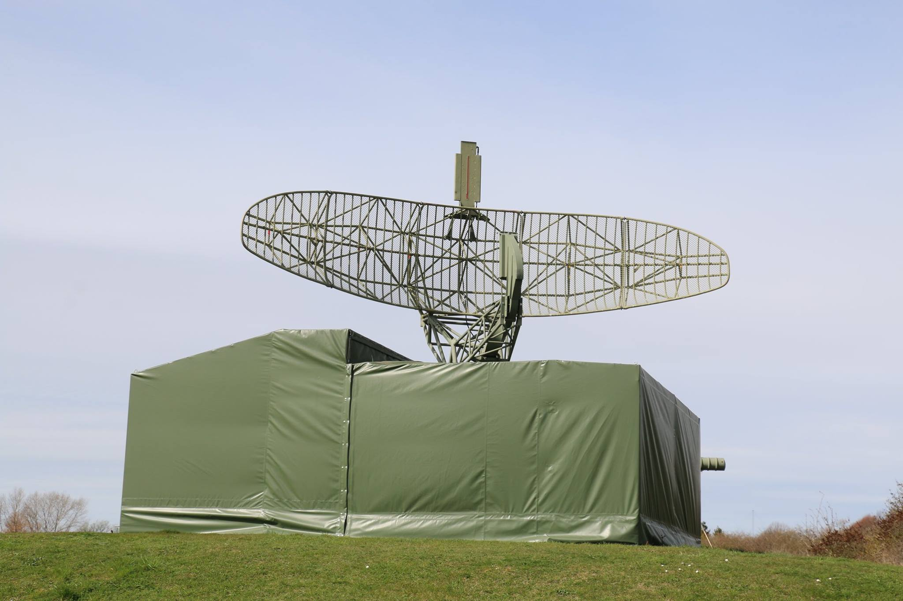

KALKLANDET - Østsjællands Museum
Mere Info
Om os
Nyheder
Flere attraktioner
Find Vej
Særudstillinger
Priser og Tider
Undervisning
1 / 5
Koldkrigsmuseum
2 / 5
Tunnel
3 / 5
Boom!
4 / 5

Radar
5 / 5
Tunnel
❮
❯